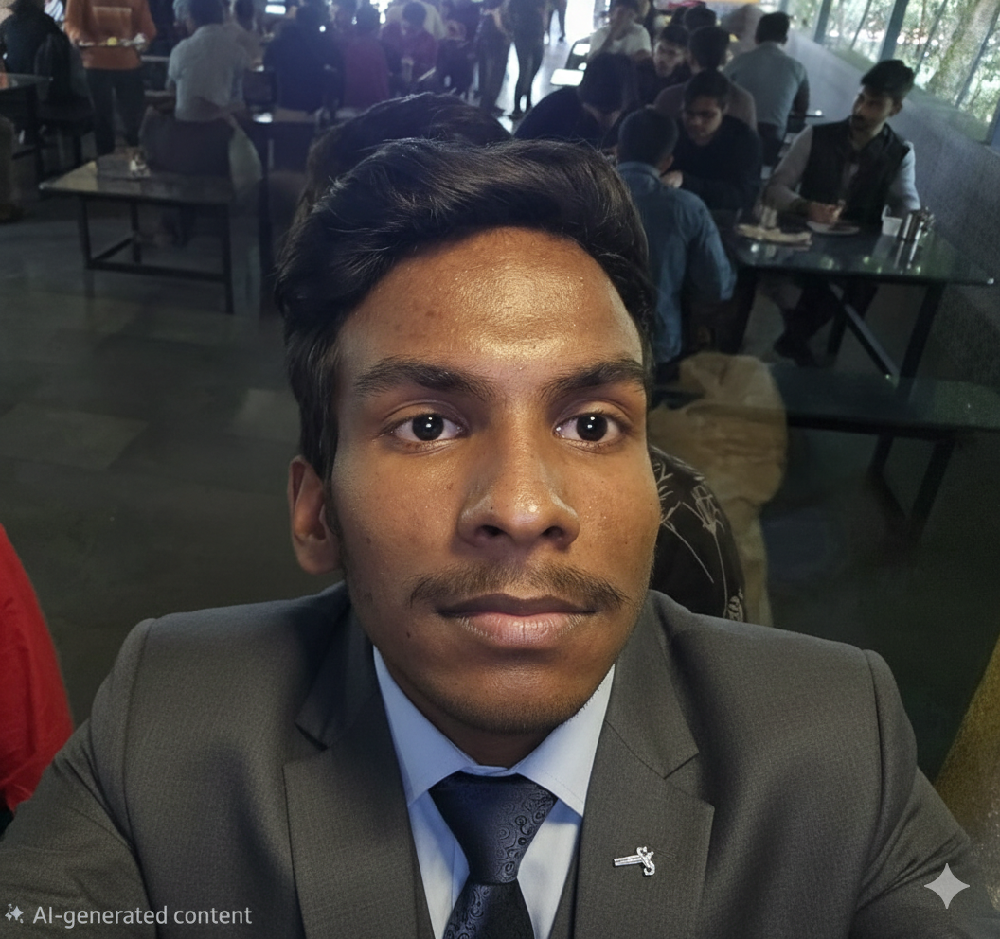

Leadership Team

Soham Patil
Chief Executive Officer

Kunal Lubhana
Chief Operations Officer
Shubh Saraswat
Head of Global Logistics
Connecting global businesses through reliable, innovative and sustainable logistics solutions.
MAERSK Logistics is a global shipping and supply chain solutions provider serving businesses across more than 130 countries. We specialize in integrated transportation services including ocean freight, air cargo, warehousing, inland transport and digital supply chain solutions.
Our mission is to simplify global trade by delivering efficient, transparent and reliable logistics services. With advanced technology and a strong global network, we help businesses move goods safely and efficiently.
To provide seamless global logistics solutions that empower businesses to grow and expand internationally through innovation, reliability and efficiency.
To become a global leader in sustainable logistics by creating smarter, greener and digitally connected supply chains.
Founded with the goal of simplifying global trade, MAERSK Logistics has grown into a trusted partner for international supply chain management. Over the years, we have expanded our global network, invested in advanced digital platforms and built strong relationships with customers worldwide.
Our commitment to innovation, sustainability and operational excellence has helped us deliver reliable logistics services to industries such as retail, automotive, pharmaceuticals, manufacturing and e-commerce.
Countries Served
Global Shipping Vessels
Containers Transported Annually
Customer Support
Extensive port and inland transportation network connecting major trade routes.
Digital tracking, supply chain analytics and real-time shipment visibility.
Strong infrastructure ensuring timely and secure cargo transportation.
Environmentally responsible transportation and green supply chain solutions.
Chief Executive Officer
Chief Operations Officer
Head of Global Logistics
Let us help you build efficient and reliable global supply chains.